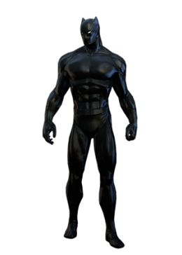
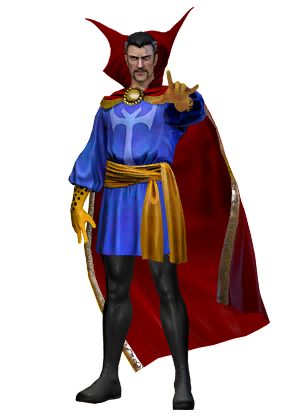
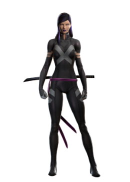
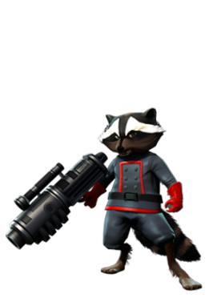
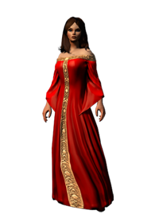

T’Challa is the king of the secretive and highly advanced African nation of Wakanda - as well as the powerful warrior known as the Black Panther. T’Challa protects his people as the latest in a legacy line of Black Panther warriors.
| Allies | Enemies |
| Illumninati | Doctor Doom |
|---|---|
| Malice | Man-Ape |
| Killmonger |

Formerly a renowned surgeon, Doctor Stephen Strange now serves as the Sorcerer Supreme—Earth’s foremost protector against magical and mystical threats. Possessing vast magical knowledge and skills to call upon, he now serves as Earth’s newest Master of the Mystic Arts.
| Allies | Enemies |
| Wong | Thanos |
|---|---|
| Iron Man | Ebony Maw |
| Star Lord | Cull Obsidian |

Betsy Braddock was Sir James Braddock's second child, and like her twin brother Brian, her life was secretly manipulated by Merlyn. Originally a precognitive working with her brother and then a telepath, she eventually had her mind placed in the body of the Japanese female ninja Kwannon, gaining many of Kwannon's martial arts skills and elements of her personality.
| Allies | Enemies |
| Wolverine | Apocalypse |
|---|---|
| Legion | Vargas |

Ain’t no thing like Rocket, ‘cept Rocket. He lives for the simple things, including collecting valuable bounty alongside his friend and partner, Groot. Quick to train a weapon on anyone who offends him, he’s far more formidable than he appears.
| Allies | Enemies |
| Drax | Blaster |
|---|---|
| Star Lord | Ultron |
| Groot |

Notably powerful, Wanda Maximoff has fought both against and with the Avengers, attempting to hone her abilities and do what she believes is right to help the world. A powerful mutant sorceress, she has been a master of the mystical arts for both the X-Men and the Avengers. Allies:
| Allies | Enemies |
| Vision | Thanos |
|---|---|
| Agatha Harkness | Enchantress |
| Crystal | Immortus |
| Kang |